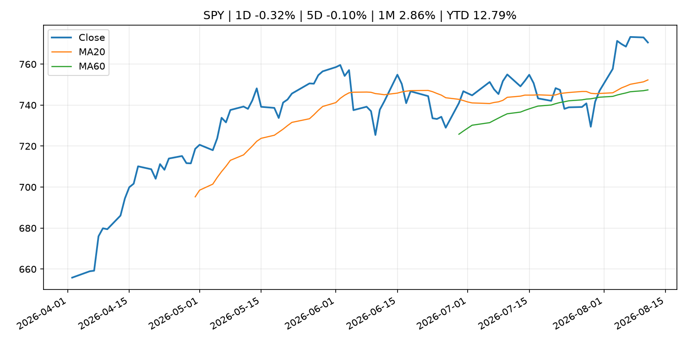
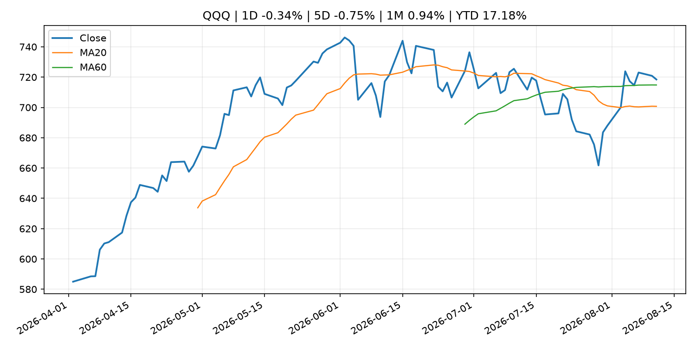
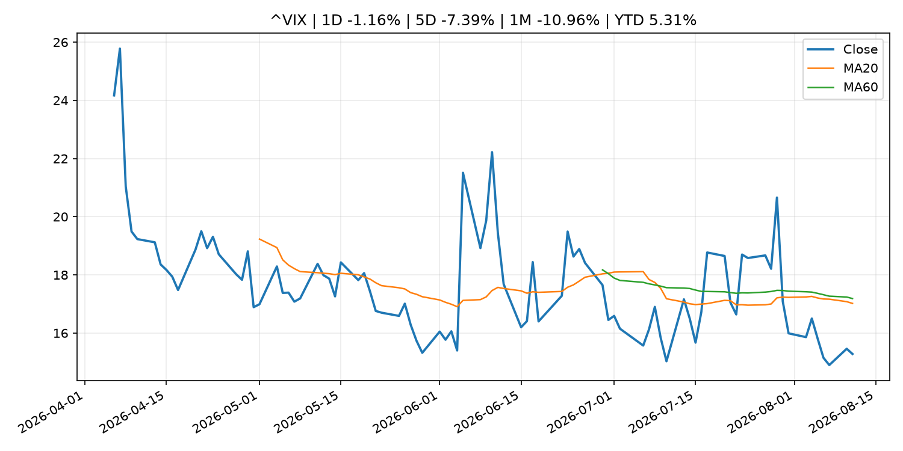
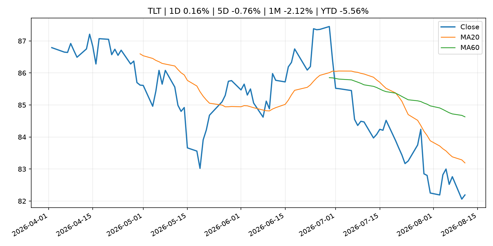
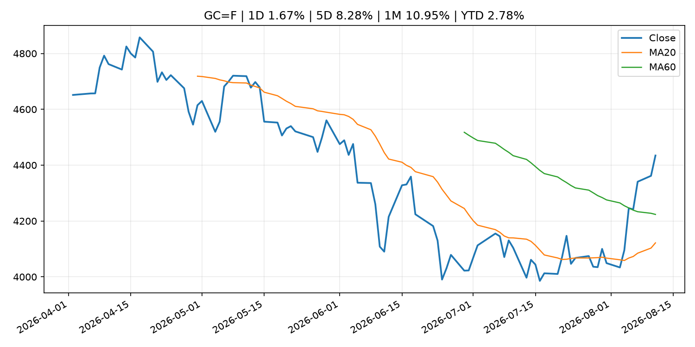
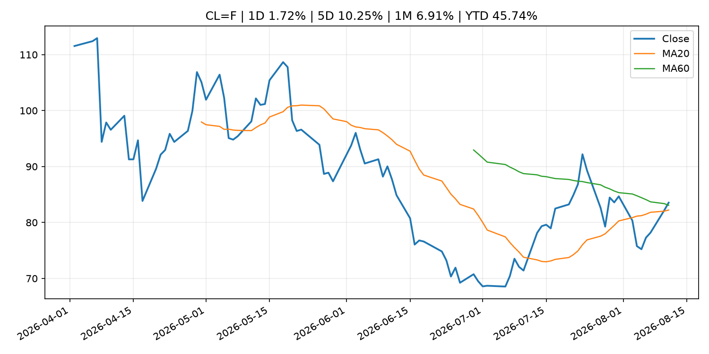
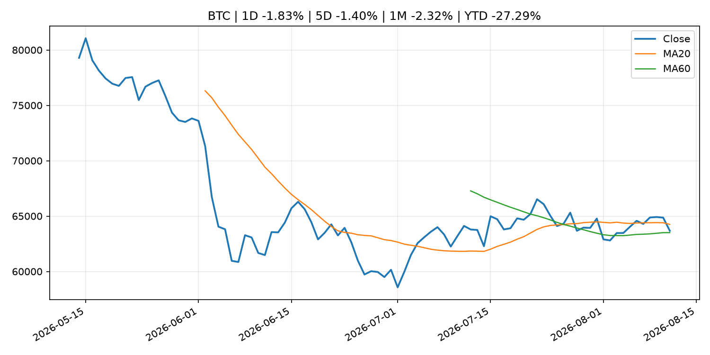
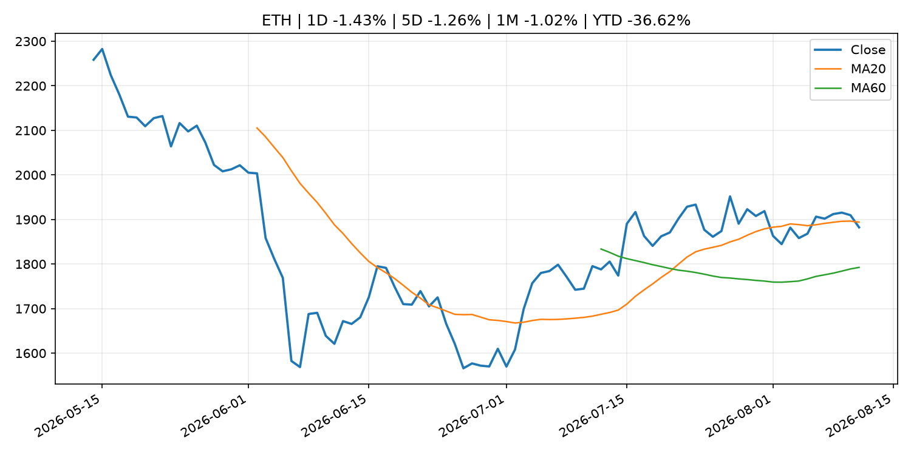
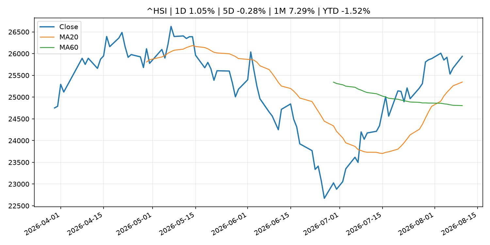

Global Macro Morning Briefing - 2026-08-12
Not financial advice / 非投资建议。
0. 今日总览
- 市场状态：inflation_shock。原油和黄金走强、股指承压，市场可能在交易通胀或地缘风险冲击。
- 今日三大主线：
- regulation: SEC Charges Private Fund Adviser Adit Ventures Management, Its CEO and Affiliated General Partners in Alleged Fraud
- earnings: Lumentum sees sales more than double as AI demand swells
- earnings: Super Micro’s earnings report brings more good news, and the stock is climbing
- 一句话结论：今日晨报重点关注：监管变化会改变行业盈利预期和资产风险溢价。；大型科技股盈利和资本开支会影响纳指、半导体和 AI 交易主线。。跨资产方面，SPY 1D -0.32%；QQQ 1D -0.34%；^VIX 1D -1.16%；TLT 1D 0.16%；GC=F 1D 1.67%；CL=F 1D 1.72%；BTC 1D -1.83%；ETH 1D -1.43%；原油和黄金走强、股指承压，市场可能在交易通胀或地缘风险冲击。政策、通胀、利率、美元、美债、能源和加密监管仍是主要观察线索。所有结论仅基于公开数据与短摘要整理，不构成投资建议。
1. 隔夜跨资产市场
- 美股：SPY 1D -0.32%，QQQ 1D -0.34%，整体趋势需结合 VIX 和利率确认。
- 美债/美元：TLT 1D 0.16%，美元指数 1D 0.00%，是判断折现率压力的核心线索。
- 黄金/原油：黄金 1D 1.67%，原油 1D 1.72%，用于观察避险、通胀和地缘风险。
- 加密：BTC 1D -1.83%，ETH 1D -1.43%，关注是否独立于纳指走出加密自身行情。
- 港股/A股：恒生 1D 1.05%，沪深300/上证 1D n/a，重点看中国政策预期与人民币线索。
- 风险观察：关注能源价格是否传导到通胀预期和央行沟通。
US_EQUITY
| symbol | latest close | 1D | 5D | 1M | YTD | trend |
|---|---|---|---|---|---|---|
| SPY | 770.56 | -0.32% | -0.10% | 2.86% | 12.79% | uptrend |
| QQQ | 718.45 | -0.34% | -0.75% | 0.94% | 17.18% | range_bound |
| DIA | 537.28 | -0.32% | -0.58% | 2.44% | 11.09% | uptrend |
| IWM | 300.99 | 0.34% | -0.24% | 2.56% | 20.99% | uptrend |
| VTI | 380.65 | -0.26% | -0.04% | 2.94% | 13.18% | uptrend |
US_MACRO_MARKET
| symbol | latest close | 1D | 5D | 1M | YTD | trend |
|---|---|---|---|---|---|---|
| ^VIX | 15.28 | -1.16% | -7.39% | -10.96% | 5.31% | strong_downtrend |
| DX-Y.NYB | 99.81 | 0.00% | -0.08% | -1.45% | 1.41% | range_bound |
| TLT | 82.19 | 0.16% | -0.76% | -2.12% | -5.56% | downtrend |
| IEF | 92.87 | 0.12% | -0.41% | -0.45% | -3.34% | downtrend |
COMMODITIES
| symbol | latest close | 1D | 5D | 1M | YTD | trend |
|---|---|---|---|---|---|---|
| GC=F | 4,434.50 | 1.67% | 8.28% | 10.95% | 2.78% | range_bound |
| SI=F | 65.04 | -0.11% | 8.29% | 12.84% | -7.82% | range_bound |
| CL=F | 83.54 | 1.72% | 10.25% | 6.91% | 45.74% | range_bound |
| BZ=F | 89.29 | 1.79% | 12.51% | 7.19% | 46.98% | uptrend |
| NG=F | 2.75 | -1.50% | 2.61% | -5.01% | -23.94% | strong_downtrend |
| HG=F | 6.64 | 0.63% | 0.26% | 6.47% | 17.66% | strong_uptrend |
HK_MARKET
| symbol | latest close | 1D | 5D | 1M | YTD | trend |
|---|---|---|---|---|---|---|
| ^HSI | 25,937.49 | 1.05% | -0.28% | 7.29% | -1.52% | strong_uptrend |
| 0700.HK | 470.80 | -2.20% | -3.45% | 2.88% | -24.43% | uptrend |
| 9988.HK | 126.40 | -0.24% | 0.48% | 14.18% | -15.17% | strong_uptrend |
| 3690.HK | 93.05 | -0.91% | 0.38% | 19.37% | -11.04% | strong_uptrend |
| 1810.HK | 26.66 | -3.48% | -4.65% | 3.17% | -33.81% | range_bound |
| 1211.HK | 89.70 | -2.82% | -4.01% | 6.85% | -9.16% | range_bound |
CRYPTO
| symbol | latest close | 1D | 5D | 1M | YTD | trend |
|---|---|---|---|---|---|---|
| BTC | 63,671.68 | -1.83% | -1.40% | -2.32% | -27.29% | range_bound |
| ETH | 1,882.31 | -1.43% | -1.26% | -1.02% | -36.62% | range_bound |
| SOLANA | 76.35 | 0.11% | 3.17% | -1.79% | -38.68% | range_bound |
| BINANCECOIN | 612.54 | 1.62% | 3.19% | 7.35% | -29.00% | strong_uptrend |
| RIPPLE | 1.02 | -0.86% | -3.82% | -8.19% | -44.57% | strong_downtrend |
2. 今日最重要的 10 条新闻
1. SEC Charges Private Fund Adviser Adit Ventures Management, Its CEO and Affiliated General Partners in Alleged Fraud
- 来源：SEC Press Releases
- 时间：2026-08-10T14:00:00-04:00
- 地区：US
- 事件类型：regulation
- 重要性层级：Tier 2
- 一句话摘要：The Securities and Exchange Commission today charged New York-based investment adviser Adit Ventures Management LLC, its CEO Eric Munson, and three affiliated general partners, Adit Ventures LLC; Adit Ventures II LLC; and Adit Ventures III LLC (the…
- 为什么重要：监管变化会改变行业盈利预期和资产风险溢价。
- 可能影响：主要影响 BTC，方向为 mixed，强度 high；加密监管或 ETF 进展会改变 BTC 的资金流和风险溢价。
- 资产：BTC 方向：mixed 强度：high 原因：加密监管或 ETF 进展会改变 BTC 的资金流和风险溢价。
- 资产：ETH 方向：mixed 强度：high 原因：监管框架会影响 ETH 产品化和机构参与度。
- 资产：COIN 方向：mixed 强度：medium 原因：监管清晰度和执法风险会影响交易平台估值。
- 资产：crypto market 方向：mixed 强度：high 原因：信息影响整个加密市场结构，但方向取决于细节。
- 原文链接：https://www.sec.gov/newsroom/press-releases/2026-73-sec-charges-private-fund-adviser-adit-ventures-management-its-ceo-affiliated-general-partners
2. Lumentum sees sales more than double as AI demand swells
- 来源：MarketWatch Top Stories
- 时间：2026-08-11T22:22:00+00:00
- 地区：US
- 事件类型：earnings
- 重要性层级：Tier 2
- 一句话摘要：Though Lumentum posted blowout earnings and an upbeat forecast, its stock was largely flat after hours.
- 为什么重要：大型科技股盈利和资本开支会影响纳指、半导体和 AI 交易主线。
- 可能影响：可能影响利率、汇率、风险资产或大宗商品预期，但当前公开信息不足以判断明确方向。
- 资产：暂无明确资产映射
- 方向：unknown
- 强度：low
- 原因：公开信息不足以判断方向。
- 原文链接：https://www.marketwatch.com/story/lumentum-sees-sales-more-than-double-as-ai-demand-swells-6ebe6ef1?mod=mw_rss_topstories
3. Super Micro’s earnings report brings more good news, and the stock is climbing
- 来源：MarketWatch Top Stories
- 时间：2026-08-11T21:49:00+00:00
- 地区：US
- 事件类型：earnings
- 重要性层级：Tier 2
- 一句话摘要：The company impressed Wall Street several weeks ago by teasing an improved profitability trajectory. Super Micro’s latest forecast has exceeded expectations as well.
- 为什么重要：大型科技股盈利和资本开支会影响纳指、半导体和 AI 交易主线。
- 可能影响：可能影响利率、汇率、风险资产或大宗商品预期，但当前公开信息不足以判断明确方向。
- 资产：暂无明确资产映射
- 方向：unknown
- 强度：low
- 原因：公开信息不足以判断方向。
- 原文链接：https://www.marketwatch.com/story/super-micros-earnings-report-brings-more-good-news-and-the-stock-is-climbing-30e5ca89?mod=mw_rss_topstories
4. CoreWeave’s stock soars as earnings show major AI momentum
- 来源：MarketWatch Top Stories
- 时间：2026-08-11T21:17:00+00:00
- 地区：US
- 事件类型：earnings
- 重要性层级：Tier 2
- 一句话摘要：The AI cloud provider topped revenue and earnings expectations, with its CEO cheering “an important inflection point.”
- 为什么重要：大型科技股盈利和资本开支会影响纳指、半导体和 AI 交易主线。
- 可能影响：可能影响利率、汇率、风险资产或大宗商品预期，但当前公开信息不足以判断明确方向。
- 资产：暂无明确资产映射
- 方向：unknown
- 强度：low
- 原因：公开信息不足以判断方向。
- 原文链接：https://www.marketwatch.com/story/coreweaves-stock-soars-as-earnings-show-major-ai-momentum-d3a5bede?mod=mw_rss_topstories
5. Bitcoin stuck as ETF inflows offset selling, but inflation data could spark a move
- 来源：CoinDesk
- 时间：2026-08-11T21:38:13+00:00
- 地区：global
- 事件类型：other
- 重要性层级：Tier 3
- 一句话摘要：Bitcoin stuck as ETF inflows offset selling, but inflation data could spark a move
- 为什么重要：这条信息暂未匹配到重大宏观、政策或市场事件，更适合作为背景跟踪。
- 可能影响：主要影响 DXY，方向为 positive，强度 high；通胀压力可能推高政策利率预期并支撑美元。
- 资产：DXY 方向：positive 强度：high 原因：通胀压力可能推高政策利率预期并支撑美元。
- 资产：TLT 方向：negative 强度：high 原因：通胀上行通常推升收益率、压低长债价格。
- 资产：QQQ 方向：negative 强度：high 原因：更高利率对成长股估值折现率不利。
- 资产：SPY 方向：mixed 强度：medium 原因：名义增长可能支撑收入，但更高利率压制估值。
- 资产：GC=F 方向：mixed 强度：medium 原因：通胀对黄金是支撑，但实际利率上行会形成压力。
- 资产：BTC 方向：mixed 强度：high 原因：加密监管或 ETF 进展会改变 BTC 的资金流和风险溢价。
- 原文链接：https://www.coindesk.com/markets/2026/08/11/bitcoin-stuck-as-etf-inflows-offset-selling-but-inflation-data-could-spark-a-move
6. EToro reports second quarter crypto loss even as total profit beats estimates
- 来源：CoinDesk
- 时间：2026-08-11T17:12:11+00:00
- 地区：global
- 事件类型：other
- 重要性层级：Tier 3
- 一句话摘要：EToro reports second quarter crypto loss even as total profit beats estimates
- 为什么重要：这条信息暂未匹配到重大宏观、政策或市场事件，更适合作为背景跟踪。
- 可能影响：更偏背景信息，短期市场影响可能有限。
- 资产：暂无明确资产映射
- 方向：unknown
- 强度：low
- 原因：公开信息不足以判断方向。
- 原文链接：https://www.coindesk.com/business/2026/08/11/digital-broker-etoro-reports-q2-crypto-revenue-dropped-120-compared-to-2025
3. 政策与央行观察
1. SEC Charges Private Fund Adviser Adit Ventures Management, Its CEO and Affiliated General Partners in Alleged Fraud
- 来源：SEC Press Releases
- 时间：2026-08-10T14:00:00-04:00
- 地区：US
- 事件类型：regulation
- 重要性层级：Tier 2
- 一句话摘要：The Securities and Exchange Commission today charged New York-based investment adviser Adit Ventures Management LLC, its CEO Eric Munson, and three affiliated general partners, Adit Ventures LLC; Adit Ventures II LLC; and Adit Ventures III LLC (the…
- 为什么重要：监管变化会改变行业盈利预期和资产风险溢价。
- 可能影响：主要影响 BTC，方向为 mixed，强度 high；加密监管或 ETF 进展会改变 BTC 的资金流和风险溢价。
- 资产：BTC 方向：mixed 强度：high 原因：加密监管或 ETF 进展会改变 BTC 的资金流和风险溢价。
- 资产：ETH 方向：mixed 强度：high 原因：监管框架会影响 ETH 产品化和机构参与度。
- 资产：COIN 方向：mixed 强度：medium 原因：监管清晰度和执法风险会影响交易平台估值。
- 资产：crypto market 方向：mixed 强度：high 原因：信息影响整个加密市场结构，但方向取决于细节。
- 原文链接：https://www.sec.gov/newsroom/press-releases/2026-73-sec-charges-private-fund-adviser-adit-ventures-management-its-ceo-affiliated-general-partners
4. 市场异动与图表
- Gold 上涨 1.67%
- Oil 上涨 1.72%
SPY

QQQ

^VIX

TLT

GC=F

CL=F

BTC

ETH

^HSI

5. 华尔街与机构公开观点
- 暂无可靠公开观点。
6. 今日重点关注
- 经济数据：经济数据：暂无可靠公开日历数据；如配置经济日历源后可自动填充。
- 央行讲话：央行讲话：暂无可靠公开日历数据；重点跟踪 Fed、ECB、BoJ、PBOC 官网 RSS。
- 财报：财报：暂无可靠数据。
- 政策事件：政策事件：暂无可靠数据。
- 风险提醒：风险提醒：关注数据源失败项、突发地缘风险、利率和美元的二阶反应。
7. 英文金融表达与宏观概念
- inflation expectations：通胀预期，指家庭、企业或市场对未来通胀的预估。 例句：Inflation expectations can shape wage bargaining and bond yields.
- real yield：实际收益率，名义利率扣除通胀预期后的收益率。 例句：Gold often reacts more to real yields than nominal yields.
- market structure：市场结构，指交易、托管、清算、ETF、监管等制度安排。 例句：Crypto market structure rules can affect institutional participation.
- terminal rate：终端利率，市场预期本轮加息周期的最高政策利率。 例句：A higher terminal rate can pressure growth stocks.
- soft landing：软着陆，指通胀回落而经济避免明显衰退。 例句：Markets often rally when data support a soft landing.
- risk-off：避险模式，资金偏向美元、国债、黄金等防御资产。 例句：A geopolitical shock can push markets into risk-off mode.
8. 背景材料
- Bitcoin stuck as ETF inflows offset selling, but inflation data could spark a move（CoinDesk，other）：Bitcoin stuck as ETF inflows offset selling, but inflation data could spark a move
- EToro reports second quarter crypto loss even as total profit beats estimates（CoinDesk，other）：EToro reports second quarter crypto loss even as total profit beats estimates
- Ravencoin, a blockchain built from Bitcoin’s code, could roll back four days of transactions（CoinDesk，other）：Ravencoin, a blockchain built from Bitcoin’s code, could roll back four days of transactions
- When safe assets compete with risk. Lessons from the 1960s–90s for bitcoin and stocks.（CoinDesk，other）：When safe assets compete with risk. Lessons from the 1960s–90s for bitcoin and stocks.
- Bitcoin-backed lending is entering its institutional era: Two Prime（CoinDesk，other）：Bitcoin-backed lending is entering its institutional era: Two Prime
- Bitcoin stuck below $65,000 as Hormuz hopes evaporate, XRP close to dropping below $1（CoinDesk，other）：Bitcoin stuck below $65,000 as Hormuz hopes evaporate, XRP close to dropping below $1
- Live updates: Bitcoin falls to $63,500; CoreWeave jumps 9% as AI demand pushes backlog over $100 billion（CoinDesk，other）：Live updates: Bitcoin falls to $63,500; CoreWeave jumps 9% as AI demand pushes backlog over $100 billion
- Software stocks break away from bitcoin: What the rare divergence means for crypto（CoinDesk，other）：Software stocks break away from bitcoin: What the rare divergence means for crypto
- Luke Dashjr removed as Bitcoin BIP editor after controversial BIP-110 fork stalls（CoinDesk，other）：Luke Dashjr removed as Bitcoin BIP editor after controversial BIP-110 fork stalls
- ECB and Frankfurt Radio Symphony invite the public to Europa Open Air concert on 20 August 2026（ECB Press Releases，other）：ECB and Frankfurt Radio Symphony invite the public to Europa Open Air concert on 20 August 2026
- BTCPay offers $190,000 bounty after bitcoin payment servers drained in exploit（CoinDesk，other）：BTCPay offers $190,000 bounty after bitcoin payment servers drained in exploit
- Bitcoin’s BIP-110 fork is 300 blocks behind BTC and six years from fixing itself（CoinDesk，other）：Bitcoin’s BIP-110 fork is 300 blocks behind BTC and six years from fixing itself
- XRP, ether lead crypto losses as traders eye $70,000 bitcoin next（CoinDesk，other）：XRP, ether lead crypto losses as traders eye $70,000 bitcoin next
- Three reasons Goldman's co-head of global banking and markets says to stay invested（CNBC Economy，other）：Goldman Sachs' Ashok Varadhan pointed to three reasons for his constructive outlook.
- Summary of Opinions at the Monetary Policy Meeting on July 30 and 31, 2026（Bank of Japan Announcements，other）：Summary of Opinions at the Monetary Policy Meeting on July 30 and 31, 2026
- Principal Figures of Financial Institutions (July)（Bank of Japan Announcements，other）：Principal Figures of Financial Institutions (July)
- Release of Latest "Loans and Bills Discounted by Sector" and "Loans to Households" Data（Bank of Japan Announcements，other）：Release of Latest "Loans and Bills Discounted by Sector" and "Loans to Households" Data
9. 数据源、失败项与免责声明
- 采集时间：2026-08-11T22:39:23
- 数据源：公开 RSS、Yahoo Finance、CoinGecko、AKShare、FRED、SEC data.sec.gov，以及用户自有 inputs/reports 文件。
- 合规说明：不绕过 WSJ、Bloomberg、FT、Reuters 等付费墙；对付费媒体只使用公开 RSS 标题、摘要、链接和发布时间。
- 免责声明：Not financial advice / 非投资建议。本项目仅供个人学习、研究和信息整理，不构成投资建议、交易建议或任何收益承诺。
- 失败或跳过的数据源：
- crypto data failed coin=dogecoin
- China market data failed symbol=上证指数: empty dataframe
- China market data failed symbol=深证成指: empty dataframe
- China market data failed symbol=创业板指: empty dataframe
- China market data failed symbol=沪深300: empty dataframe
- China market data failed symbol=中证500: empty dataframe
- China market data failed symbol=科创50: empty dataframe
- FRED_API_KEY not set; skipping FRED macro series
- SEC failed cik=0000320193
- SEC failed cik=0000789019
- SEC failed cik=0001045810
- SEC failed cik=0001318605
- SEC failed cik=0001577552